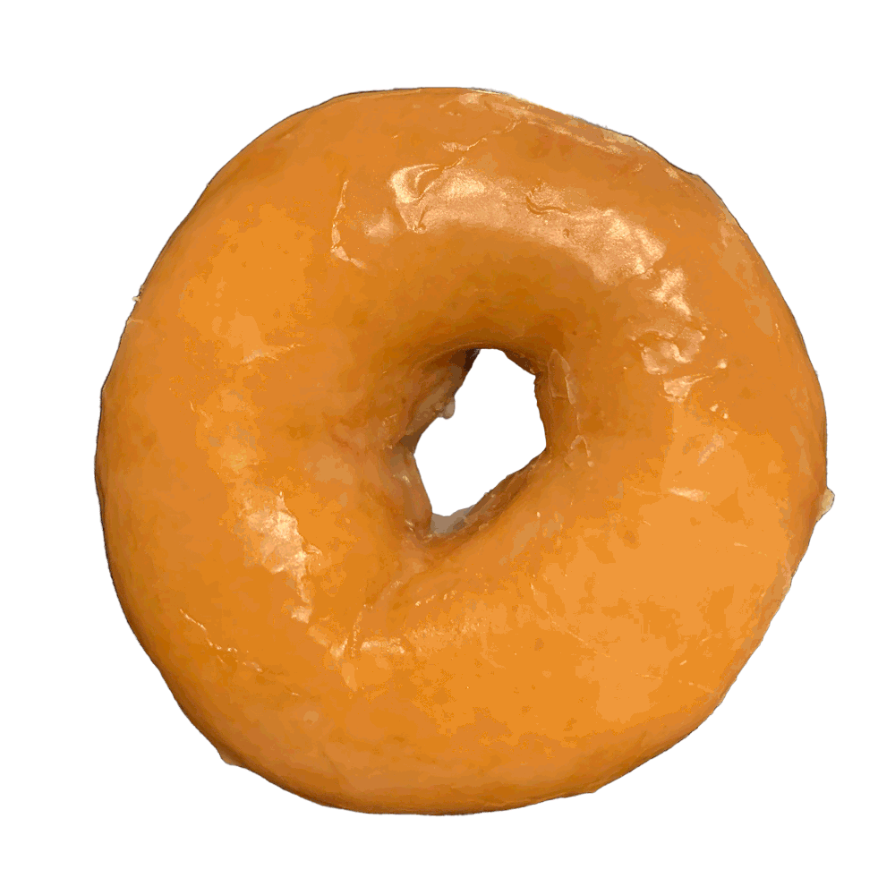

Krispy Kreme
I remember Krispy Kreme Doughnuts quite fondly...
Now as full disclosure, they are not my favorite. I know it's quite the controversial statement. This is in part due to the fact that my Mom loves Dunkin Donuts, and we often got those on Mothers Day. I have also grown to appreciate cake donuts more and more specialty donuts, such as those available from Duck Donuts, which I remember getting when I visited my Mom's family before a store was opened in Winston-Salem, or Intown Donutz, which is my family's current favorite doughnut shop. However, there will always be something special about Krispy Kreme and its classic glazed donut that is perfect for any special occasion.
Correction, I talked to my family the other night about going to Krispy Kreme for "research" and they all sounded excited so maybe Krispy Kreme is the favorite? But it's not the only good doughnut shop in town, it's just the only major doughnut chain to originate in Winston-Salem, which is quite the fun story...
The very first Krispy Kreme shop...
The founder of Krispy Kreme, Vernon Rudolph, and his brother, were looking for a new place to start their own business. They had stopped in Peoria, Illinois, when Vernan pulled out a pack of Camel cigarettes and read "Winston-Salem" off the packaging. He thought that if the city could support such a large national industry as tobacco, it could also support the big plans he had for his doughnuts business. Not to mention, such a large city = a large customer base. He spent the 25 dollars he had in his pocket and bought the first store on South Main Street, not far from Old Salem. In July of 1937, the first batch of Krispy Kreme doughnuts was made.
"Why not Winston-Salem? A town with a company producing a nationally advertised product has to be a good bet."
Vernon had acquired a doughnut recipe from his uncle who originally bought it from a New Orleans Chef. Unlike the typical doughnut at the time, which was simply a fried cake, this recipe produced a yeast raised doughnut which contained potato. The use of a cream base mixed with flour produced that crispy texture. This allowed for the soft and sweet doughnut that practically melts in your mouth.
Rudolph sold almost exclusively to grocery stores when he first opened business. Over time people on their way to work on Main Street would smell the doughnuts and become interested in buying them. He ultimately made the decision to break down a wall in his factory to open up a service window to sell directly to customers.
If you like documentaries, I highly recommend the series The Food That Built America on the History Channel. There's an episode (Season 3 Episode 3 "Do or Donut") that covers the rise of Krispy Kreme doughnuts and there's a reenacted scene of Vernon Rudolph taking a sledgehammer to the factory wall and it's one of the funniest moments in the series. The entire series is the perfect blend of history, humorous commentary and over the top dramatization, and I can not recommend it enough.
Krispy Kreme doughnuts really started to kick off. As you might know, a Krispy Kreme doughnut is best when fresh, so the move from wholesale to retail was really genius and allowed demand for their doughnuts to rise significantly leading to the opening of seven locations by 1948.
Innovation and a Brand New Machine...
After the "construction" of the window, Krispy Kreme struggled to keep up with the demand. Their current doughnut making process took too long and each store's doughnuts varied significantly. So Vernon develops a machine, called the Ring-King Junior, that fully automates the doughnut making process. The machine could produce 700 doughnuts in one hour and has evolved into the standard for the industry.
Vernon Rudolph found the process fascinating and knew his customers would too. Customers enjoyed watching the process of the doughnuts being made, which he referred to as "doughnut theater" and led to the development of a fanbase. Making Krispy Kreme more than a doughnut shop, but as The Food That Built America put it, "an American experience.""